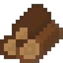

1 · A site's sheet
Opened by tapping a site on the map (one tap). Building takes the second tap, on the building's own card. Numbers are placeholders until balance: the layout is what's up for review. All mockups
Undiscovered
Plain until the player walks within range. No stars, no buildings, no cost: only what to do and how far.
Empty siteNot visited
Discovered, standing here
Stars revealed. Every building fits any site: each card says what it makes and who wants it, and has its own Build button.
Site ★★☆Good ground: 2 stars of 3
4
10Discovered, can't build
Full state: a rich site in its last day, but too far from the hall. Each disabled Build says why in one line beneath it; a banner gives the way out when one reason blocks them all.
Site ★★★Rich ground: 3 stars of 3
Too far from your hall (1.4 km of 1 km).
Too far from your hall (1.4 km of 1 km).
Other reasons, in this order: walk to the site to build (620 m) · all 3 buildings placed · not enough gold or wood (shown on the cost) · leaves in under a day (a building would last 6 days: allowed, it resets the site's life).
Built
A built site's marker opens the building's sheet directly (one tap; see Building sheet). This header is what the site part of it looks like: stars, the life reset by building, and where it stands.
Farm ★★☆On a 2-star site · 0.9 km from your hall
What it must answer at a glance
- 1Have I been here? "Not visited" under the name, and the blue "Walk here" banner as the only content.
- 2How long will it last? The timer strip under the header, same place and words as every temporary sheet.
- 3How far is it, from me and from my hall? One distance line.
- 4How good is it? Stars by the name, with the count in words beneath (never colour alone).
- 5Can I build more? "Buildings near the hall: 2 of 3 within 1 km".
- 6What can I build, what does it make, who wants it? One card per building: the good's icon, the rate, and the place icon it's for.
- 7What does it cost, and why can't I? Cost on the button; a reason line under every disabled one; a banner when one reason blocks everything.
- 8What now? After building, one line says the next step.
Decisions to confirm
- Built site = building. Its marker opens the building sheet directly, so there's no separate "built site" sheet to learn.
- The ember button goes on the building that suits the nearest discovered place (here a tavern is near); the others are wood. It's a hint, not a rule.
- Rates shown are "with a hero" at this site's stars. Locals' rate appears on the building sheet.
- Grain has no pixel icon in the game yet; 🌾 stands in until one is picked or drawn.
- Building on a site in its last day is allowed: building resets the site's life to six days.
- Site icon: 🪧 on a dashed brass diamond, so an empty site never looks like a place you can visit for goods.